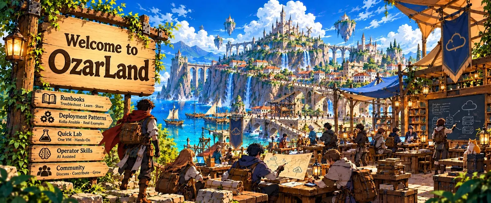
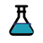
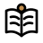
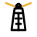
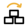
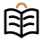

OzarLand
A shared land for better OpenStack operations.
A community-driven space where OpenStack operators share what they learn running it: fixes, deployment choices, a learning path and first-hand experience. Open to everyone, whatever tool deployed your cloud. Everything is public and Apache-2.0.

OzarLand Academy
One learning path to run OpenStack, across one island: begin with LUMO's story, then seven stops: discover it on a disposable lab, deploy it, operate it, intervene on instances and hypervisors, take it to production, then compare another way to run it and equip your AI assistant.
Stop 0 · Begin
The basic concepts of OpenStack, told as a story: LUMO builds a village and learns why each piece of a cloud exists.
Stop 1 · Discover

Quick labA disposable OpenStack on cloud VMs in about an hour, with break-and-repair exercises.
Stop 2 · Deploy
Ways to deploy OpenStack with Kolla-Ansible, compared rather than prescribed.
Stop 3 · Operate

Kolla-Ansible AcademyDay-2 operations learned from the source code, one study per OpenStack release.
Stop 4 · Intervene
Symptom-driven runbooks for instance and hypervisor problems.
Stop 5 · Go to production

Production guideVisual memos for production: one operational lesson per page.
Stop 6 · Compare

OKD OpenStack labOpenStack run by Kubernetes operators on OKD: a reproducible lab for operators who know Kolla-Ansible.
Stop 7 · Equip
Agent Skills that make Claude reason like a senior OpenStack operator, also a Claude Code plugin.
The community
Newcomer path
Five short pages, read in order: what OpenStack is made of, how to read a runbook, where to ask.
Discussions
Questions, experience reports and ideas, answered in public by operators.
Contribute
Confirm a page on your platform, share a problem you solved, describe how you deploy.

Deeper readingThe book behind many of the runbooks: OpenStack, the Day After Tomorrow.
What makes a page trustworthy
Every page says where it was observed (OpenStack release, components, deployment method) and how much it was checked: draft, lab-verified (run on a lab by someone else), validated (confirmed by a human operator on a real platform). Pages are written and lab-tested with AI agents, reviewed independently, and validated only by people: how OzarLand is built.